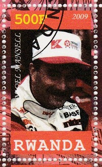
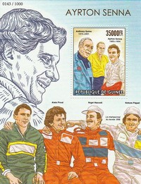
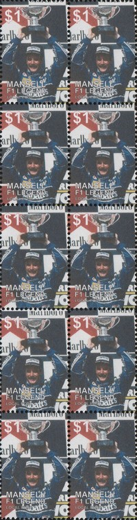

Nigel Mansell (1992)
Nigel Ernest James Mansell (born 8th August 1953) won both the F1 World Championship and the CART Indy Car World Series - Mansell was the reigning F1 champion when he moved over to CART, and became the first person to win the CART title in his debut season, he is the only person to have held both titles simultaneously. In his early racing career, Mansell financed his racing himself - he also suffered a number of serious injuries, but persevered.
|  | |
|  | |
|  |
1980 - 1984 : Team Lotus
Mansell's driving was noticed by Colin Chapman and he was selected as the Lotus test driver for 1980. Mansell's subsequent four years as a full-time Lotus driver were a struggle, as the cars were unreliable and he was continually out-performed by teammate Elio de Angelis. Out of 59 race starts with the team, he finished just 24 of them. He managed a best finish of third place, which he achieved five times during the four years.
1985 - 1987 : Williams Honda
On joining Williams in 1985, Mansell was assigned the Red 5 number on his car. He started winning races and became a serious title contender - during this time he was twice runner up. In 1986, before the season had started Honda had reportedly attempted to persuade Frank Williams to fire Mansell and replace him with their own test driver. Williams, who was always more interested in the Constructors' title than the Drivers' as it showed that his team was the best, refused.
 |
|
 |
 |
1988 : Williams
For the first time in his career, Mansell was the team's undisputed number one driver. However, Honda had taken their turbo power to McLaren and Williams was left with the naturally aspirated Judd V8 - this was a dismal season.
1989 - 1990 : Ferrari
In preparation for the 1989 season, Mansell became the last Ferrari driver to be personally selected by Enzo Ferrari before his death in August 1988, an honour Mansell described as "one of the greatest in my entire career". However, the cars were unreliable and so Mansell's time at Ferrari was unremarkable.
1991 - 1992, 1994 : Williams Renault
Mansell's return to Williams was not straightforward - he made many demands, which were initially described as "impossible" by Frank Williams. The second stint at Williams was even more successful than the first, with 1992 being Mansell's finest season. Mansell set a number of records in 1992. Despite being world champion, Mansell had a public disagreement with Williams and at the end of 1992 was effectively forced to retire, making way for Alain Prost and Ayrton Senna to drive for Williams. So, for the 1993 season Mansell signed for the Newman/Haas team to partner Mario Andretti in the CART series. In 1994, Bernie Ecclestone helped secure Mansell's return towards the end of the season (following the death of Senna) as it was important to have a champion driving that season as TV figures had started to decline (Prost retired in 1993 after winning the championship for Williams).
 |
1995 : McLaren Mercedes
Mansell lost his Williams seat to David Coulthard and so signed for McLaren, but never saw eye-to-eye with Ron Dennis. Also, the McLaren was uncompetitve, and so Mansell retired part way through the season.